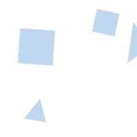

筛查者须知
《基于互联网自取样宫颈癌筛查-管理模式的构建与应用》——邮寄样本（广州、深圳、顺德居住的居民）


《基于互联网自取样宫颈癌筛查-管理模式的构建与应用》——邮寄样本（广州、深圳、顺德居住的居民）
项目来源与特色：
- 本网站提供的“基于互联网自取样宫颈癌筛查”是由妇幼健康协会立项、北京大学人民医院牵头、中国优生科学协会阴道镜和病理学会分会(CSCCP)主导实施的一项阴道自取样宫颈癌筛查管理模式的构建与应用项目。
- 与以往由医务工作者进行的宫颈癌筛查不同，这个项目采用一种非常简单的“自取样”刷，由参加筛查者自己从阴道获得筛查标本，用于人乳头瘤病毒（HPV）检测。参加筛查者通过互联网进行注册、申请筛查和邮寄样本参加筛查，经互联网络查询检测结果。只有筛查结果为阳性者才需要进一步阴道镜检查。
- 本项目所采用的技术均已经过多个临床研究和临床实践证实了其有效性，并经相关部门批准使用。
- 本项目实施的目的是使所有需要筛查的妇女都能方便的得到筛查，并通过项目的实施评价我国不同地区、不同人群自取样宫颈癌筛查模式的效果和可行性。通过女性自取样和网络的模式进行宫颈癌筛查，适应我国不同地区与不同人群宫颈癌筛查的需求，有望提高我国宫颈癌筛查的覆盖率。
- 所需要的筛查费用及筛查阳性者的阴道镜和宫颈病理确诊费用由项目承担，参与筛查的女性无需支付相关费用。
参加筛查的条件:
- 本项目设定的筛查条件是：年龄30~59岁，未行全子宫切除术、子宫颈切术和盆腔放射治疗，以及无急性生殖道和泌尿系感染的非妊娠女性。
- 符合筛查条件的女性参加筛查完全出于自愿。欲参加筛查的女性登录网站注册后，须阅读《知情同意书》，对筛查无疑问后点击“同意”（此等同于亲笔签字），并完成填写“个人资料信息”，便可参加筛查。如果欲参加筛查者未点击“同意”，则不能参加筛查。
- 取样要求：取样前3天禁性生活、无阴道冲洗和上药等，避开月经期。
参加筛查的流程:
- 使用实名制手机号（安卓手机）扫描二维码下载APP点击《基于互联网自取样宫颈癌筛查-管理模式的构建与应用——邮寄标本》，依据说明进行注册（或登陆https://www.mcareu.com网站，在“申请筛查”下拉菜单的《基于互联网自取样宫颈癌筛查-管理模式的构建与应用——邮寄标本》进行注册。
- 阅读《知情同意书》，并无疑问后点击“同意”（视同参与者亲笔签字），填写“个人资料信息”，申请成功，获取个人专属的“筛查条码”，此条码用于标识检测标本和查阅筛查结果。
- 由项目方电话确认邮寄地址无误后，将收到邮寄的自取样刷和贴有个人专属“筛查条码”的标本瓶（或标本卡）；经网络视频或图文说明学习自取样方法，在自己家中自助取样，将自取样标本寄回。
- 在网上填写《筛查取样后调查表》，2个月后凭个人专属的“筛查条码”查阅筛查结果及进一步处理的指导。
宫颈癌防治要点知识:
- 高危型HPV的持续感染是宫颈癌前病变和宫颈癌的致病原因。
- 人类非常容易感染HPV，大多数成年人在一生的某段时间内都会感染HPV，但依靠人体自身的免疫力，大约90%的感染可以完全清除。只有一小部分高危型HPV持续感染的女性才会有发生宫颈癌的危险。
- HPV持续感染从开始引起病变到发展到癌前病变和癌一般需要8~10年的时间，并首先引起的也只是癌前病变，癌前病变在发展成为癌症之前通常也会持续存在很多年，这个阶段很容易筛查和治疗。宫颈癌筛查的目的是发现宫颈癌前病变和早期癌，以便合理干预，阻断癌前病变的进展。因此，只要早期检查出来，简单的门诊小手术就可以彻底治愈。
- 宫颈癌一级预防的主要措施是HPV疫苗的接种，对于有性生活的女性无论是否接种疫苗，均应该定期参加筛查。
- 对于HPV阳性特别是HPV16、18亚型感染者，和/或宫颈细胞学异常及临床检查异常的妇女，需要进一步行阴道镜检查和宫颈活检，以明确诊断。
- 晚期宫颈癌患者的治疗耗资巨大。一旦发展成为晚期癌症，难以治愈。然而筛查和治疗癌前病变却花费很少，绝大多数病例能够治愈。
自取样宫颈癌筛查介绍:
- 自取样技术能够让女性在家中自己采集样本进行HPV检测筛查宫颈癌。大量研究已经证明，对自取样标本采用适宜的方法检测HPV和在医院由医生获取的样本一样准确。
- 自取样器由取样刷、装有保存液的样本瓶和取样说明书组成。
- 自取样过程安全无痛，卫生且容易操作。取样刷伸入阴道内时动作要轻柔，缓慢推进，边伸入边上下移动，直到感觉到刷子到达阴道顶端，旋转3~5圈取出即可。请仔细阅读《自取样操作说明》或观看网站的取样方法视频。
- 取样完成后，将取样刷刷头端放入标本瓶至瓶底，将刷柄靠近瓶口稍用力即可折断刷柄，将刷头保留在标本瓶里，拧紧瓶盖（或将样本刷上的标本涂于标本卡），装入随邮收到的快递封，寄回。
参加筛查前，请您回答以下问题：
您曾经有过性生活
您现在没有怀孕吧
